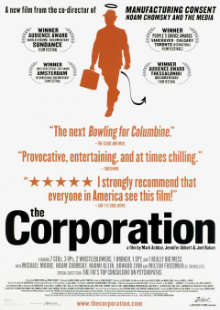

The Corporation
Watch - Genres : Documentary
- Actor : Mikela Jay, Rob Beckwermert, Christopher Gora
- Director : Jennifer Abbott, Mark Achbar
- Country : Canada
- Movie : The Corporation
- Duration : 144 min
- Release : 2003
Description:
Synopsis: The Corporation, Canada's most successful documentary in history, is the winner of 26 international awards and 10 Audience Choice Awards including the 2004 Sundance Film Festival. The film charts the development of the corporation as a legal entity from its genesis to unprecedented legal protection stemming from creative interpretation of the Fourteenth Amendment to the United States Constitution, that is from its origins as an institution chartered by governments to carry out specific public functions, to the rise of the vast modern institutions entitled to some of the legal rights of a "person." One central theme of the documentary is an attempt to assess the "personality" of the corporate "person" by using diagnostic criteria from the DSM-IV; Robert Hare, a University of British Columbia Psychology Professor and FBI consultant, compares the modern, profit-driven corporation to that of a clinically diagnosed psychopath.